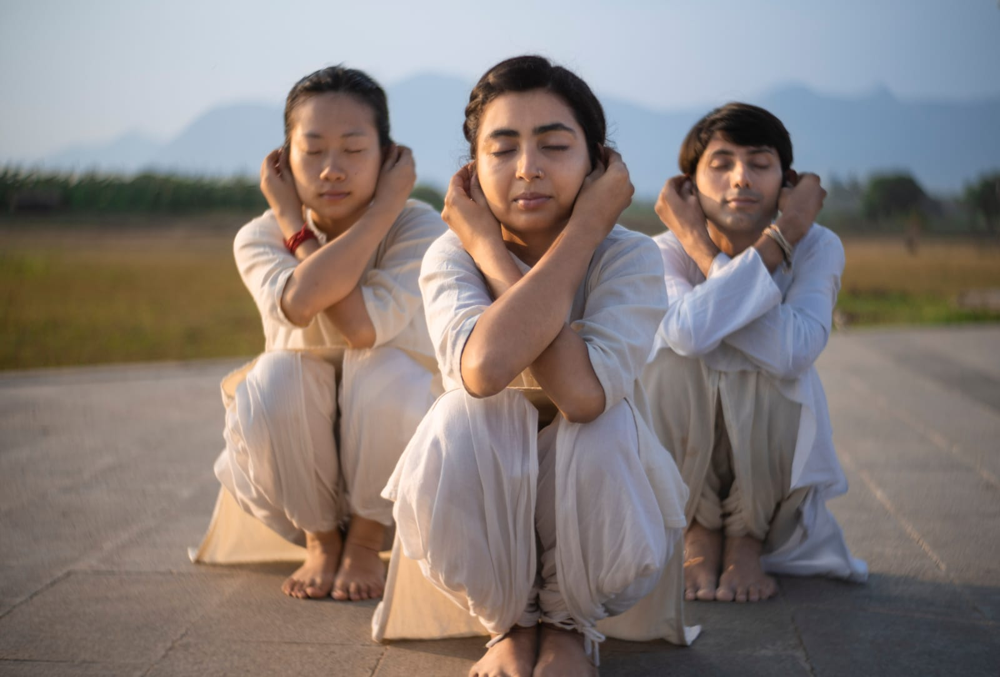

Isha Wellness Program
Rejuvenating natural yogic methods to strengthen ocular muscles, improve vision, and relieve the strain of digital lifestyles.
Enroll at Yogartha →What is the Eye Care Workshop?
The Isha Eye Care Workshop offers a series of dynamic yogic exercises designed specifically to address the root causes of vision problems. According to yogic science, many vision issues arise from malfunctioning ocular muscles caused by chronic mental and emotional tension.
This program teaches you to strengthen the musculature around and within the eyes through specific, targeted movements designed by Sadhguru. It also incorporates Shanmukhi Mudra, a subtle practice for facial and sensory rejuvenation.
Especially vital in today's screen-heavy world, these practices provide a natural, daily self-care routine that can prevent further deterioration, relieve digital eye strain, and over time, improve conditions like myopia and hypermetropia.

Benefits
Specifically targets and exercises the ocular musculature, addressing the root cause of many common vision issues.
Documented to help improve conditions like myopia (nearsightedness) and hypermetropia (farsightedness) with regular practice.
Deeply soothes and relaxes the eyes after prolonged exposure to computers, phones, and artificial lighting.
Acts as a powerful preventive measure to maintain lifelong eye health and slow the natural decline of vision.
Through the integration of Shanmukhi Mudra, it brightens the eyes and rejuvenates the entire face.
Reduces the mental and emotional tension that often manifests as physical strain in the eyes.
The Practice
Specific yogic movements designed to strengthen and balance the ocular muscles.
The subtle "Six-Gates" practice for sensory withdrawal and facial rejuvenation.
You will learn a sequence that you can continue independently at home as a lifelong self-care tool.
Conducted in a workshop format (typically 1.5 to 3.5 hours) allowing for comprehensive instruction.
Who Can Join
Note: This is a preventative and strengthening practice, not a substitute for medical treatment for serious eye diseases.
"Your eyes are an intricate mechanism. Vision problems are often due to a malfunction in the musculature of the eye. If you exercise and relax them properly, your vision can definitely improve."
— Sadhguru
Attend the Eye Care Workshop at Yogartha, Dehradun and learn how to protect and improve your eyesight naturally.